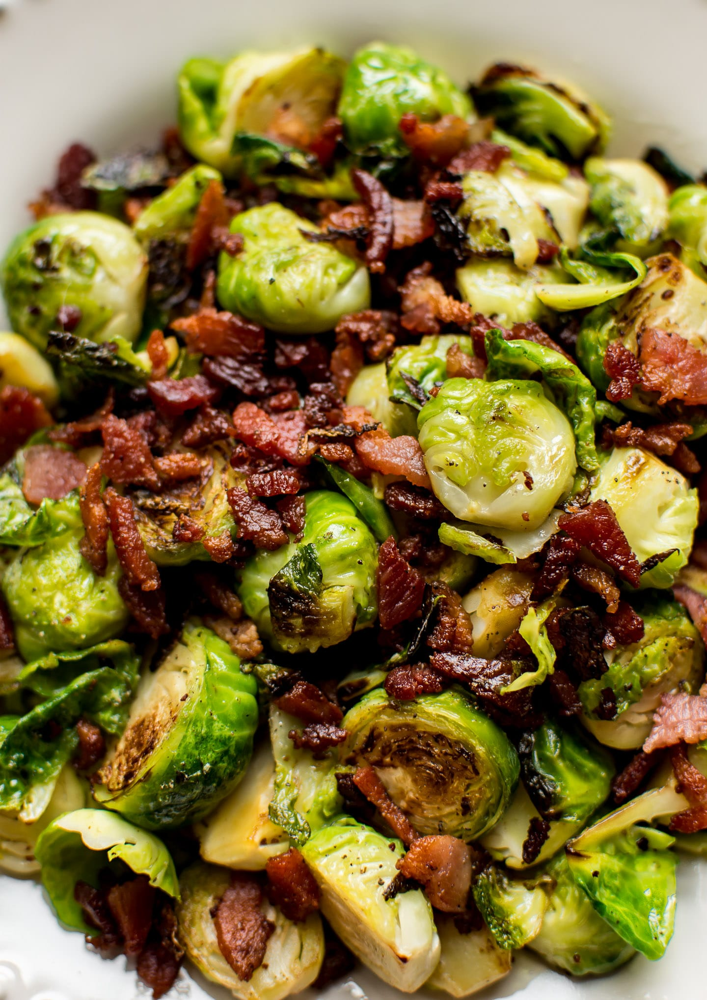

Bacon & Brussel Sprouts

Description
Simple and delicious. Cooked with onions, bacon, butter and brussel sprouts. Seasoned with Salt
and freshly ground black pepper to taste. Perfect to go with your Sunday Dinner be it a beef roast or
a simple roasted chicken.
Ingredients:
- 4 strips of thick-cut bacon
- 2 Tablespoons butter
- 1 lb Brussel Sprouts halved
- 1/2 large onion, chopped
- Salt and freshly ground black pepper
Directions:
- Cook bacon in a large skillet over medium-high heat until crispy.
- Remove to a paper towel-lined plate, then roughly chop
- In same pan with bacon fat, melt butter over high heat
- Add onions and Brussels Sprouts and cook, stirring occasionally, until sprouts are golden brown, 8 to 10 minutes
- Season with salt and pepper, to taste, and toss bacon back into pan
- Serve immediately